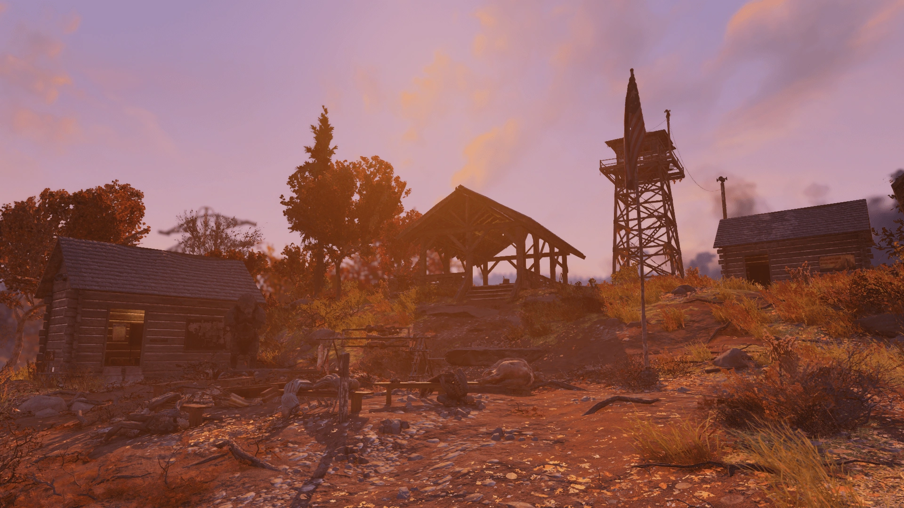
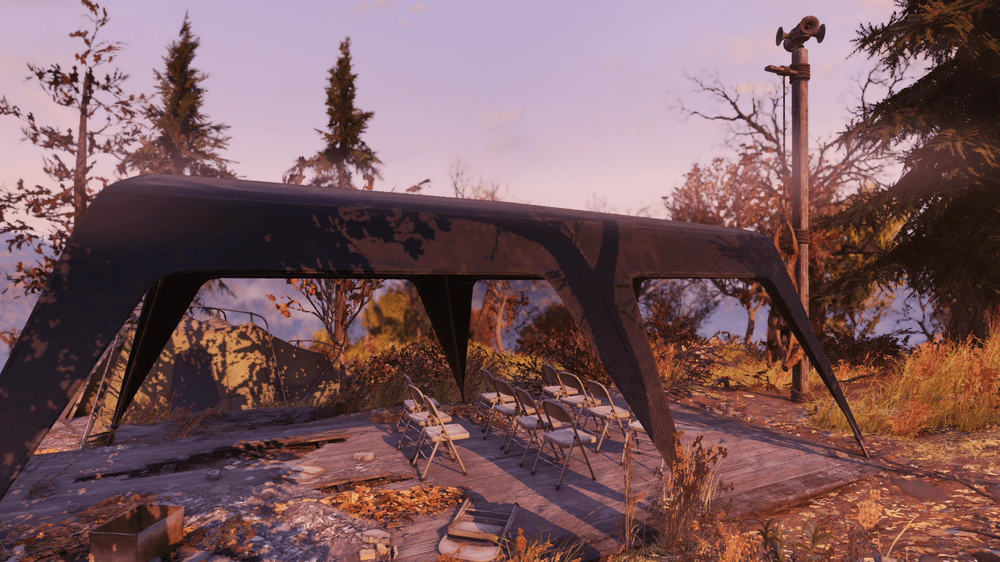
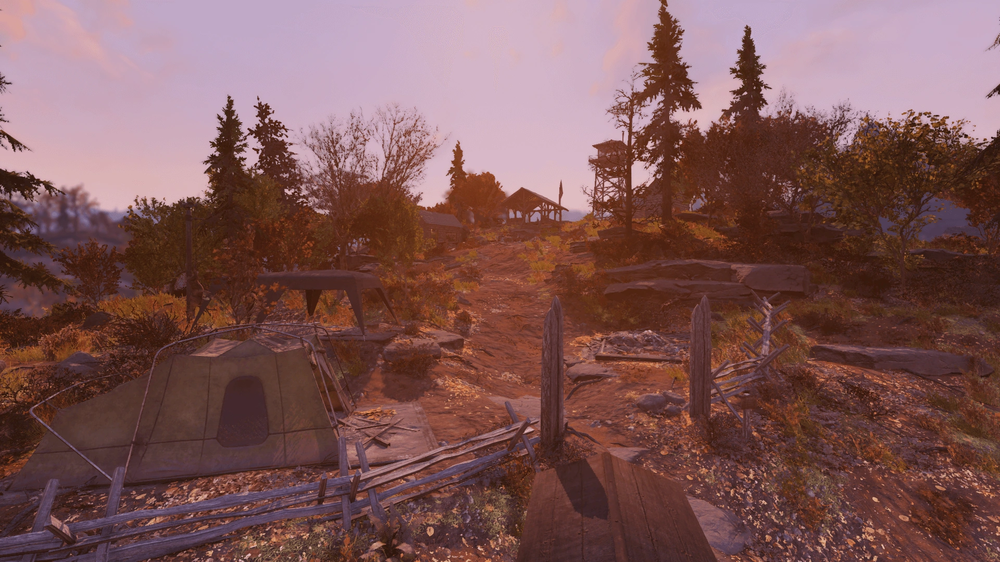
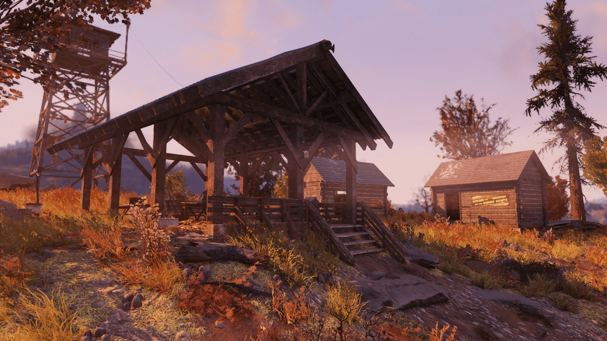
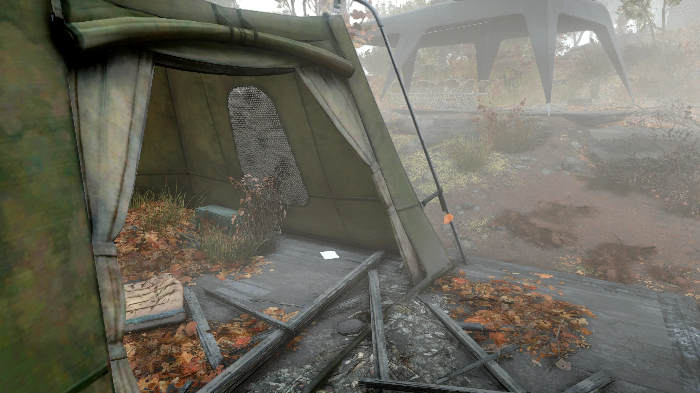
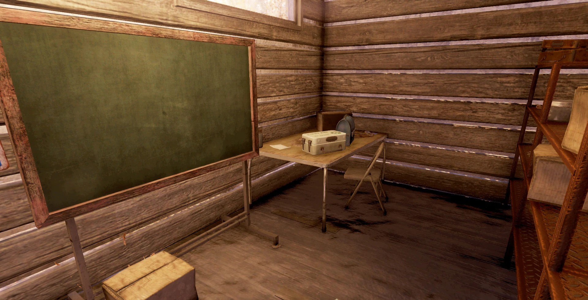
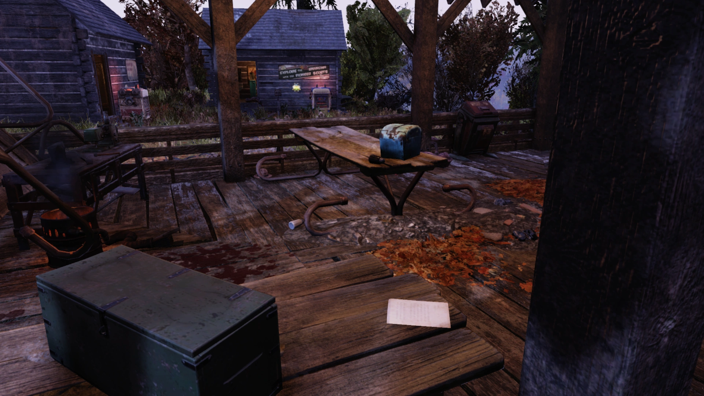
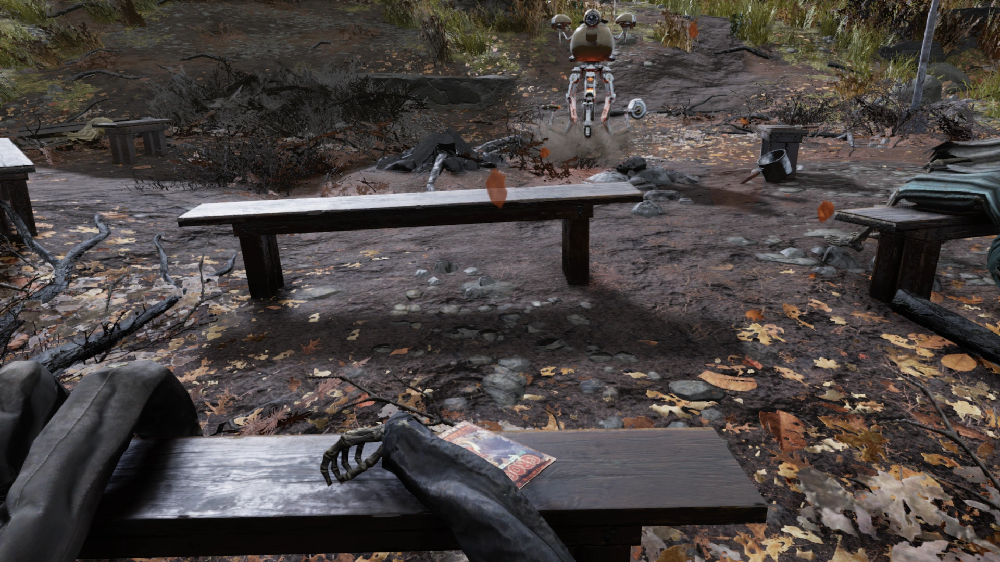
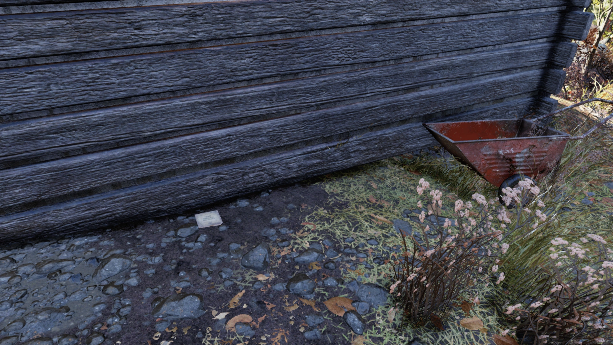

Camp Adams
キャンプ・アダムス
キャンプ・アダムス（Camp Adams）は、アパラチアの森林地帯に位置するロケーションです。
背景
キャンプ・アダムスは森林地帯に位置する野外キャンプ場で、かつてパイオニア・スカウトが野外サバイバル教室を開催するために使用していました。
レイアウト
キャンプ・アダムスは大戦前のキャンプ場で、キャンプ・アダムス展望台のすぐ北にある丘の上に位置しています。
メインエリアは、キャンプ事務所、シャワー棟、ロッカールームの3つの小屋と、屋根付きのピクニックエリア、中央のキャンプファイヤーエリアで構成されています。
敷地内には2つの調理ステーション（中央のキャンプファイヤーエリアとピクニックテーブルの横）があり、ピクニックエリアにはアーマー作業台も設置されています。
建物内で見つかる看板やスカウトブック、そして『スカウトライフ』のコピーは、ここが爆弾が落ちる前は主にスカウトキャンプとして利用されていたことを物語っています。
キャンプの監督官であるミス・ナニーの「スカウトリーダー・ペニー」は、展望台近くのベンチに囲まれたキャンプファイヤーのそばにいます。
小屋から続く道の先、丘を少し下ったところには大きな天幕（テント）とマーキーが張られています。
マーキー内には、いくつかの座席の前に吊るされたラッドスタッグのメスの死体があります。
大きなテントにはいくつかの寝袋があり、スカウトたちがキャンプを訪れた際にここで寝ていたものと思われます。
ロケーションのあちこちに点在する複数のクマ避けのゴミ箱や、キャンプ事務所の前にある大きなクマの像は、かつて人間がこの地域の頂点捕食者ではなかったことを示唆しています。
キャンプの周辺にはブラックベリー、ツツジ、ススハナの自生地があるほか、木材や戦利品を得られる丸太や切り株も散見されます。
キャンプの入り口には動物の解体場があり、新鮮なラッドスタッグのメスが吊るされています。
主な戦利品
- パイオニアブック：キャンプ - メモ。キャンプ北西端のテント内、フットロッカーの隣。
- パイオニアブック：資金集め - メモ。クマの像がある小屋の中のデスクの上。
- パイオニアブック：食事の準備 - メモ。屋根付きパビリオンの下、ピクニックテーブルの上。
- 3つの雑誌出現ポイント：
- 中央のベンチのキャンプファイヤー付近。
- 知識試験小屋の裏側の地面。
- シャワー棟の床の上。
- 2つのレシピ出現ポイント - 双眼鏡のそば。
- 双眼鏡 - キャンプファイヤーのベンチの上。
パイオニアブック：キャンプ（Transcript）
アメリカ・パイオニア・スカウト ハンドブックキャンプ地を計画する際の主要な検討事項：
天候 - 必要な装備の量と種類を決定します。強風や雨など、典型的な悪天候に備えましょう。出発の直前に、詳細な10日間の天気予報を印刷してラミネートしてください。寝袋、ジャケット、下着がすべてその気候に適した格付けであることを確認してください。適切な重ね着（レイヤー）を用意することを忘れないでください。
テント - 場所、滞在期間、人数に適したテントを選びましょう。テントでのキャンプは密着することを前提としているため、気の合う相手とバディを組んでください。一般的には3シーズン用テントで十分ですが、雪中や高地でのキャンプを計画している場合は4シーズン用テントが必要になるかもしれません。修理キットを忘れないでください。8ドルの投資が、穴から浸入する雨による悲惨な夜からあなたを救ってくれます。
設営場所 - 適切な場所を選んでください。可能であれば、地面から浮かせるために木製のフレームの上にテントを張ります。それが不可能な場合は、岩、裸地、砂利などの耐久性のある表面を探してください。水辺から少なくとも200フィート（約60メートル）離れた場所に設営し、洪水に巻き込まれないよう下流側を避けてください。温度変化を抑えるために日当たりの良い場所を探し、そして「上」を見るのを忘れないでください！枯れ木の枝の下や落石の恐れがある場所にテントを張ると、大惨事につながる可能性があります。
廃棄物管理 - 人間の排泄物、トイレットペーパー、その他の衛生用品を持ち帰るための袋を用意してください。
パイオニアブック：資金集め（Transcript）
アメリカ・パイオニア・スカウト ハンドブック募金活動と資金集め
- 可能な限り、募金活動や資金集めには何らかの形で地域社会を巻き込むべきです。ベイクセール（お菓子販売）、ランニング大会、修復・清掃プロジェクト、イノベーション・フェア、学内競技会などを通じて地域社会と交流し、より密接な絆と責任感を築くことができます。
- すべての募金活動には、大人の承認と監督が必要です。
- 非侵入的：私たちは地域社会を自分たちのところに呼び込みたいのであって、安っぽい装飾品や品物で彼らを悩ませたいわけではありません。地域社会を自然環境により近づけることが目的です。
- トレーニング：学んだスキルを活かして地域住民を訓練しましょう。皆さんの多くは心肺蘇生法（CPR）の訓練を受けています。CPRやサバイバル教室は、資金を集めるための素晴らしい方法です。
- スカウトが医薬品、余剰商業製品、警備サービスを販売すること、またはあらゆる種類の犯罪行為に関与することは禁止されています。
パイオニアブック：食事の準備（Transcript）
アメリカ・パイオニア・スカウト ハンドブック小規模なキャンプや大規模なジャンボリー（大会）で料理をする際、いくつかの重要な要素があります。
衛生状態 - レストランレベルの衛生状態を維持するのは難しいかもしれませんが、以下のガイドラインに従う必要があります。
- 鍋やフライパンの洗浄：調理の「前」と「後」の両方で、すべての鍋やフライパンを必ず洗ってください。食事を提供するスカウトたちが、自分の食器を確実に洗える簡単な方法を用意しましょう。3つのバケツシステムを使用してください：1つ目は最初のすすぎと食べ残しの掻き出し用、2つ目は細菌に対抗するための石鹸水用、そして最後は洗った皿をすすぐためのバケツです。
健康 - カロリー密度が高く、マクロ栄養素のバランスが良い食事を心がけてください。炭水化物40％、良質な脂質30％、タンパク質30％が理想です。MRE（戦闘糧食）のような既製品は避け、可能であれば基本的な食材から自炊するようにしましょう。
採集 - パイオニア・スカウティングの一部は、環境中の何が食べられて何が食べられないかを学ぶこと、つまり「土地に根ざした生活」です。確信が持てない場合は、食べてはいけません。グループリーダーや採集バッジを取得した他のスカウトに相談してください。
旅の途中で - 出発前に、予定している期間の2倍の期間を過ごせるだけの十分な食料を準備し、同行者全員が適切な装備を持っていることを確認してください。ナッツやドライフルーツなどの手軽なスナックや、サンドイッチのような食べやすい食事は定番です。
創造的に！ - 他のスカウトとアイデアを共有し、新しい食べ方をブレインストーミングしましょう。クミン、シナモン、塩、胡椒などのスパイスセットを持ち歩きましょう。温かい食事に少しのバリエーションを加えるだけで、士気は一瞬で高まります。
登場作品
キャンプ・アダムスはFallout 76にのみ登場します。
ギャラリー









キャンプ・アダムスは、パイオニア・スカウトの野外活動の拠点として非常に「健全な」雰囲気を持つロケーションです。アパラチアの過酷なウェイストランドの中で、戦前の子供たちがここでバッジを目指して訓練に励んでいた様子を想像すると、どこか切なさを感じます。
特に注目すべきは、今回フルテキストを掲載した3冊の「パイオニアブック」です。単なるゲーム的なヒントにとどまらず、実際のサバイバルやキャンプのノウハウ、果ては地域社会との向き合い方までが詳細に記されており、パイオニア・スカウトという組織がいかに本格的で、教育的な理念を持っていたかが分かります。
夜に発生するパブリックイベント「Campfire Tales（キャンプファイヤー・テイルズ）」は、不気味なミス・ナニーの語りを聞きながら、暗闇から迫る脅威を退けるという最高の演出が楽しめます。スカウトの制服を着て参加すれば、気分はもうアパラチアのパイオニア・スカウトですね！
This article was created by translating and editing Camp Adams, PIONEERBOOK: Camping, PIONEERBOOK: Fundraisers, and PIONEERBOOK: Meal prep from Nukapedia: The Fallout Wiki.
Licensed under the Creative Commons Attribution-Share Alike License (CC BY-SA 3.0).
コミュニティ維持のため、寄付を受け付けております。
> COMMENTS